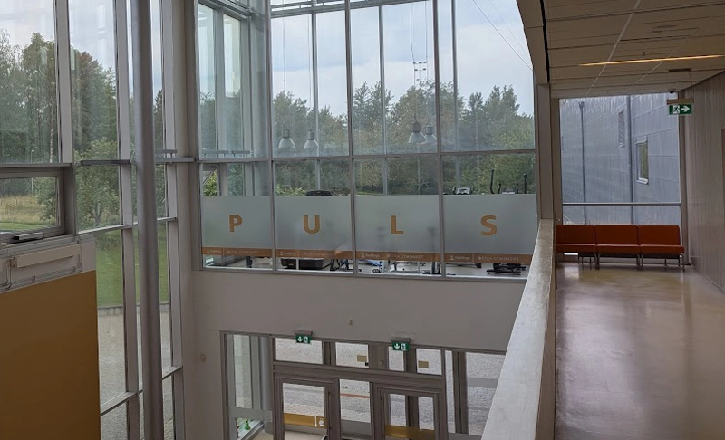

Insändare

GYM-SAMVERKAN KRÄVS!
Jag klev in i gymme på morron, lika laddad som en älg i brunst, redo å värma opp med lite hederligt gummibandsdrag. Men NÄ, nån förbannad pojkvasker springer omkring å tror att gymutrustning växer på tallkvistar? Nå är de ju inte Röda Korset, det är ett GYM. Å ett gym utan gummiband är som palt utan fläsk – rena katastrofen.
Efter funderingar, å trots att jag ä arg som en järv, vars vilopinne är stulen, så vill jag va konstruktiv: Gym-Samverkan är vad vi saknar. Som grannsamverkan – fast för folk som bryr sig om muskler, moral å ordning i samhället.
Vi ska sätta opp lappar, vi ska hålla koll, vi ska skriva opp när nåt försvinn, å vi går banne mig manngard mellan roddmaskinen om det behövs. Ingen pojkvasker ska kunna smyga runt å plocka gymgrejer, vi ska stå enade bakom min heliga paragraf: "Jerka-pergolan §1: Rör du våra grejer, så rör vi opp ett jävla liv.". Den förbannade snorhyveln ska banne mig lämna tillbaka allt och lite till.
Så till den snorhyvel som tagit gummibanden: Dä här ä banne mig, första å sista varningen innan vi inför passiv, men fruktansvärt aggressiv ögonkontakt i gym korridoren — å tro mej, efter årsskiftet så skall jag införa en förundersökning gällande saken!
Med rättvis ilska å garn i näven, Garn-Jerka